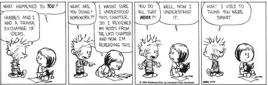

When I was a young woman, I wanted a prince-like mate. Very handsome, very successful. A big cheese. I wanted a glamorous career, but nothing too hard or risky. And I wanted it all to come to me as validation of who I was.
It would be many years before I was satisfied. I got a great guy, but he was a work in progress. I have a great career, but boy, is it a constant challenge. Nothing was easy. So why am I satisfied? I changed my mindset.
I changed it because of my work. One day my doctoral student, Mary Bandura, and I were trying to understand why some students were so caught up in proving their ability, while others could just let go and learn. Suddenly we realized that there were two meanings to ability, not one: a fixed ability that needs to be proven, and a changeable ability that can be developed through learning.
That’s how the mindsets were born. I knew instantly which one I had. I realized why I’d always been so concerned about mistakes and failures. And I recognized for the first time that I had a choice.
When you enter a mindset, you enter a new world. In one world—the world of fixed traits—success is about proving you’re smart or talented. Validating yourself. In the other—the world of changing qualities—it’s about stretching yourself to learn something new. Developing yourself.
In one world, failure is about having a setback. Getting a bad grade. Losing a tournament. Getting fired. Getting rejected. It means you’re not smart or talented. In the other world, failure is about not growing. Not reaching for the things you value. It means you’re not fulfilling your potential.
In one world, effort is a bad thing. It, like failure, means you’re not smart or talented. If you were, you wouldn’t need effort. In the other world, effort is what makes you smart or talented.
You have a choice. Mindsets are just beliefs. They’re powerful beliefs, but they’re just something in your mind, and you can change your mind. As you read, think about where you’d like to go and which mindset will take you there.
Benjamin Barber, an eminent political theorist, once said, “I don’t divide the world into the weak and the strong, or the successes and the failures. . . . I divide the world into the learners and nonlearners.”
What on earth would make someone a nonlearner? Everyone is born with an intense drive to learn. Infants stretch their skills daily. Not just ordinary skills, but the most difficult tasks of a lifetime, like learning to walk and talk. They never decide it’s too hard or not worth the effort. Babies don’t worry about making mistakes or humiliating themselves. They walk, they fall, they get up. They just barge forward.
What could put an end to this exuberant learning? The fixed mindset. As soon as children become able to evaluate themselves, some of them become afraid of challenges. They become afraid of not being smart. I have studied thousands of people from preschoolers on, and it’s breathtaking how many reject an opportunity to learn.
We offered four-year-olds a choice: They could redo an easy jigsaw puzzle or they could try a harder one. Even at this tender age, children with the fixed mindset—the ones who believed in fixed traits—stuck with the safe one. Kids who are born smart “don’t do mistakes,” they told us.
Children with the growth mindset—the ones who believed you could get smarter—thought it was a strange choice. Why are you asking me this, lady? Why would anyone want to keep doing the same puzzle over and over? They chose one hard one after another. “I’m dying to figure them out!” exclaimed one little girl.
So children with the fixed mindset want to make sure they succeed. Smart people should always succeed. But for children with the growth mindset, success is about stretching themselves. It’s about becoming smarter.
One seventh-grade girl summed it up. “I think intelligence is something you have to work for . . . it isn’t just given to you. . . . Most kids, if they’re not sure of an answer, will not raise their hand to answer the question. But what I usually do is raise my hand, because if I’m wrong, then my mistake will be corrected. Or I will raise my hand and say, ‘How would this be solved?’ or ‘I don’t get this. Can you help me?’ Just by doing that I’m increasing my intelligence.”
It’s one thing to pass up a puzzle. It’s another to pass up an opportunity that’s important to your future. To see if this would happen, we took advantage of an unusual situation. At the University of Hong Kong, everything is in English. Classes are in English, textbooks are in English, and exams are in English. But some students who enter the university are not fluent in English, so it would make sense for them to do something about it in a hurry.
As students arrived to register for their freshman year, we knew which ones were not skilled in English. And we asked them a key question: If the faculty offered a course for students who need to improve their English skills, would you take it?
We also measured their mindset. We did this by asking them how much they agreed with statements like this: “You have a certain amount of intelligence, and you can’t really do much to change it.” People who agree with this kind of statement lean toward a fixed mindset.
Those who lean toward a growth mindset agree that: “You can always substantially change how intelligent you are.”
Later, we looked at who said yes to the English course. Students with the growth mindset said an emphatic yes. But those with the fixed mindset were not very interested.
Believing that success is about learning, students with the growth mindset seized the chance. But those with the fixed mindset didn’t want to expose their deficiencies. Instead, to feel smart in the short run, they were willing to put their college careers at risk.
This is how the fixed mindset makes people into nonlearners.
You can even see the difference in people’s brain waves. People with both mindsets came into our brain-wave lab at Columbia. As they answered hard questions and got feedback, we were curious about when their brain waves would show them to be interested and attentive.
People with a fixed mindset were only interested when the feedback reflected on their ability. Their brain waves showed them paying close attention when they were told whether their answers were right or wrong.
But when they were presented with information that could help them learn, there was no sign of interest. Even when they’d gotten an answer wrong, they were not interested in learning what the right answer was.
Only people with a growth mindset paid close attention to information that could stretch their knowledge. Only for them was learning a priority.
If you had to choose, which would it be? Loads of success and validation or lots of challenge?
It’s not just on intellectual tasks that people have to make these choices. People also have to decide what kinds of relationships they want: ones that bolster their egos or ones that challenge them to grow? Who is your ideal mate? We put this question to young adults, and here’s what they told us.
People with the fixed mindset said the ideal mate would:
Make them feel perfect.
Worship them.
In other words, the perfect mate would enshrine their fixed qualities. My husband says that he used to feel this way, that he wanted to be the god of a one-person (his partner’s) religion. Fortunately, he chucked this idea before he met me.
People with the growth mindset hoped for a different kind of partner. They said their ideal mate was someone who would:
See their faults and help them to work on them.
Challenge them to become a better person.
Encourage them to learn new things.
Certainly, they didn’t want people who would pick on them or undermine their self-esteem, but they did want people who would foster their development. They didn’t assume they were fully evolved, flawless beings who had nothing more to learn.
Are you already thinking, Uh-oh, what if two people with different mindsets get together? A growth-mindset woman tells about her marriage to a fixed-mindset man:
I had barely gotten all the rice out of my hair when I began to realize I made a big mistake. Every time I said something like “Why don’t we try to go out a little more?” or “I’d like it if you consulted me before making decisions,” he was devastated. Then instead of talking about the issue I raised, I’d have to spend literally an hour repairing the damage and making him feel good again. Plus he would then run to the phone to call his mother, who always showered him with the constant adoration he seemed to need. We were both young and new at marriage. I just wanted to communicate.
So the husband’s idea of a successful relationship—total, uncritical acceptance—was not the wife’s. And the wife’s idea of a successful relationship—confronting problems—was not the husband’s. One person’s growth was the other person’s nightmare.
Speaking of reigning from atop a pedestal and wanting to be seen as perfect, you won’t be surprised that this is often called “CEO disease.” Lee Iacocca had a bad case of it. After his initial success as head of Chrysler Motors, Iacocca looked remarkably like our four-year-olds with the fixed mindset. He kept bringing out the same car models over and over with only superficial changes. Unfortunately, they were models no one wanted anymore.
Meanwhile, Japanese companies were completely rethinking what cars should look like and how they should run. We know how this turned out. The Japanese cars rapidly swept the market.
CEOs face this choice all the time. Should they confront their shortcomings or should they create a world where they have none? Lee Iacocca chose the latter. He surrounded himself with worshipers, exiled the critics—and quickly lost touch with where his field was going. Lee Iacocca had become a nonlearner.
But not everyone catches CEO disease. Many great leaders confront their shortcomings on a regular basis. Darwin Smith, looking back on his extraordinary performance at Kimberly-Clark, declared, “I never stopped trying to be qualified for the job.” These men, like the Hong Kong students with the growth mindset, never stopped taking the remedial course.
CEOs face another dilemma. They can choose short-term strategies that boost the company’s stock and make themselves look like heroes. Or they can work for long-term improvement—risking Wall Street’s disapproval as they lay the foundation for the health and growth of the company over the longer haul.
Albert Dunlap, a self-professed fixed mindsetter, was brought in to turn around Sunbeam. He chose the short-term strategy of looking like a hero to Wall Street. The stock soared but the company fell apart.
Lou Gerstner, an avowed growth mindsetter, was called in to turn around IBM. As he set about the enormous task of overhauling IBM culture and policies, stock prices were stagnant and Wall Street sneered. They called him a failure. A few years later, however, IBM was leading its field again.
People in a growth mindset don’t just seek challenge, they thrive on it. The bigger the challenge, the more they stretch. And nowhere can it be seen more clearly than in the world of sports. You can just watch people stretch and grow.
Mia Hamm, the greatest female soccer star of her time, says it straight out. “All my life I’ve been playing up, meaning I’ve challenged myself with players older, bigger, more skillful, more experienced—in short, better than me.” First she played with her older brother. Then at ten, she joined the eleven-year-old boys’ team. Then she threw herself into the number one college team in the United States. “Each day I attempted to play up to their level . . . and I was improving faster than I ever dreamed possible.”
Patricia Miranda was a chubby, unathletic high school kid who wanted to wrestle. After a bad beating on the mat, she was told, “You’re a joke.” First she cried, then she felt: “That really set my resolve . . . I had to keep going and had to know if effort and focus and belief and training could somehow legitimize me as a wrestler.” Where did she get this resolve?
Miranda was raised in a life devoid of challenge. But when her mother died of an aneurysm at age forty, ten-year-old Miranda came up with a principle. “When you’re lying on your deathbed, one of the cool things to say is, ‘I really explored myself.’ This sense of urgency was instilled when my mom died. If you only go through life doing stuff that’s easy, shame on you.” So when wrestling presented a challenge, she was ready to take it on.
Her effort paid off. At twenty-four, Miranda was having the last laugh. She won the spot for her weight group on the U.S. Olympic team and came home from Athens with a bronze medal. And what was next? Yale Law School. People urged her to stay where she was already on top, but Miranda felt it was more exciting to start at the bottom again and see what she could grow into this time.
Sometimes people with the growth mindset stretch themselves so far that they do the impossible. In 1995, Christopher Reeve, the actor, was thrown from a horse. His neck was broken, his spinal cord was severed from his brain, and he was completely paralyzed below the neck. Medical science said, So sorry. Come to terms with it.
Reeve, however, started a demanding exercise program that involved moving all parts of his paralyzed body with the help of electrical stimulation. Why couldn’t he learn to move again? Why couldn’t his brain once again give commands that his body would obey? Doctors warned that he was in denial and was setting himself up for disappointment. They had seen this before and it was a bad sign for his adjustment. But, really, what else was Reeve doing with his time? Was there a better project?
Five years later, Reeve started to regain movement. First it happened in his hands, then his arms, then legs, and then torso. He was far from cured, but brain scans showed that his brain was once more sending signals to his body that the body was responding to. Not only did Reeve stretch his abilities, he changed the entire way science thinks about the nervous system and its potential for recovery. In doing so, he opened a whole new vista for research and a whole new avenue of hope for people with spinal cord injuries.
Clearly, people with the growth mindset thrive when they’re stretching themselves. When do people with the fixed mindset thrive? When things are safely within their grasp. If things get too challenging—when they’re not feeling smart or talented—they lose interest.
I watched it happen as we followed pre-med students through their first semester of chemistry. For many students, this is what their lives have led up to: becoming a doctor. And this is the course that decides who gets to be one. It’s one heck of a hard course, too. The average grade on each exam is C+, for students who’ve rarely seen anything less than an A.
Most students started out pretty interested in chemistry. Yet over the semester, something happened. Students with the fixed mindset stayed interested only when they did well right away. Those who found it difficult showed a big drop in their interest and enjoyment. If it wasn’t a testimony to their intelligence, they couldn’t enjoy it.
“The harder it gets,” reported one student, “the more I have to force myself to read the book and study for the tests. I was excited about chemistry before, but now every time I think about it, I get a bad feeling in my stomach.”
In contrast, students with the growth mindset continued to show the same high level of interest even when they found the work very challenging. “It’s a lot more difficult for me than I thought it would be, but it’s what I want to do, so that only makes me more determined. When they tell me I can’t, it really gets me going.” Challenge and interest went hand in hand.
We saw the same thing in younger students. We gave fifth graders intriguing puzzles, which they all loved. But when we made them harder, children with the fixed mindset showed a big plunge in enjoyment. They also changed their minds about taking some home to practice. “It’s okay, you can keep them. I already have them,” fibbed one child. In fact, they couldn’t run from them fast enough.
This was just as true for children who were the best puzzle solvers. Having “puzzle talent” did not prevent the decline.
Children with the growth mindset, on the other hand, couldn’t tear themselves away from the hard problems. These were their favorites and these were the ones they wanted to take home. “Could you write down the name of these puzzles,” one child asked, “so my mom can buy me some more when these ones run out?”
Not long ago I was interested to read about Marina Semyonova, a great Russian dancer and teacher, who devised a novel way of selecting her students. It was a clever test for mindset. As a former student tells it, “Her students first have to survive a trial period while she watches to see how you react to praise and to correction. Those more responsive to the correction are deemed worthy.”
In other words, she separates the ones who get their thrill from what’s easy—what they’ve already mastered—from those who get their thrill from what’s hard.
I’ll never forget the first time I heard myself say, “This is hard. This is fun.” That’s the moment I knew I was changing mindsets.
The plot is about to thicken, for in the fixed mindset it’s not enough just to succeed. It’s not enough just to look smart and talented. You have to be pretty much flawless. And you have to be flawless right away.
We asked people, ranging from grade schoolers to young adults, “When do you feel smart?” The differences were striking. People with the fixed mindset said:
“It’s when I don’t make any mistakes.”
“When I finish something fast and it’s perfect.”
“When something is easy for me, but other people can’t do it.”
It’s about being perfect right now. But people with the growth mindset said:
“When it’s really hard, and I try really hard, and I can do something I couldn’t do before.”
Or “[When] I work on something a long time and I start to figure it out.”
For them it’s not about immediate perfection. It’s about learning something over time: confronting a challenge and making progress.
Actually, people with the fixed mindset expect ability to show up on its own, before any learning takes place. After all, if you have it you have it, and if you don’t you don’t. I see this all the time.
Out of all the applicants from all over the world, my department at Columbia admitted six new graduate students a year. They all had amazing test scores, nearly perfect grades, and rave recommendations from eminent scholars. Moreover, they’d been courted by the top grad schools.
It took one day for some of them to feel like complete imposters. Yesterday they were hotshots; today they’re failures. Here’s what happens. They look at the faculty with our long list of publications. “Oh my God, I can’t do that.” They look at the advanced students who are submitting articles for publication and writing grant proposals. “Oh my God, I can’t do that.” They know how to take tests and get A’s but they don’t know how to do this—yet. They forget the yet.
Isn’t that what school is for, to teach? They’re there to learn how to do these things, not because they already know everything.
I wonder if this is what happened to Janet Cooke and Stephen Glass. They were both young reporters who skyrocketed to the top—on fabricated articles. Janet Cooke won a Pulitzer Prize for her Washington Post articles about an eight-year-old boy who was a drug addict. The boy did not exist, and she was later stripped of her prize. Stephen Glass was the whiz kid of The New Republic, who seemed to have stories and sources reporters only dream of. The sources did not exist and the stories were not true.
Did Janet Cooke and Stephen Glass need to be perfect right away? Did they feel that admitting ignorance would discredit them with their colleagues? Did they feel they should already be like the big-time reporters before they did the hard work of learning how? “We were stars—precocious stars,” wrote Stephen Glass, “and that was what mattered.” The public understands them as cheats, and cheat they did. But I understand them as talented young people—desperate young people—who succumbed to the pressures of the fixed mindset.
There was a saying in the 1960s that went: “Becoming is better than being.” The fixed mindset does not allow people the luxury of becoming. They have to already be.
Let’s take a closer look at why, in the fixed mindset, it’s so crucial to be perfect right now. It’s because one test—or one evaluation—can measure you forever.
Twenty years ago, at the age of five, Loretta and her family came to the United States. A few days later, her mother took her to her new school, where they promptly gave her a test. The next thing she knew, she was in her kindergarten class—but it was not the Eagles, the elite kindergarten class.
As time passed, however, Loretta was transferred to the Eagles and she remained with that group of students until the end of high school, garnering a bundle of academic prizes along the way. Yet she never felt she belonged.
That first test, she was convinced, diagnosed her fixed ability and said that she was not a true Eagle. Never mind that she had been five years old and had just made a radical change to a new country. Or that maybe there hadn’t been room in the Eagles for a while. Or that maybe the school decided she would have an easier transition in a more low-key class. There are so many ways to understand what happened and what it meant. Unfortunately, she chose the wrong one. For in the world of the fixed mindset, there is no way to become an Eagle. If you were a true Eagle, you would have aced the test and been hailed as an Eagle at once.
Is Loretta a rare case, or is this kind of thinking more common than we realize?
To find out, we showed fifth graders a closed cardboard box and told them it had a test inside. This test, we said, measured an important school ability. We told them nothing more. Then we asked them questions about the test. First, we wanted to make sure that they’d accepted our description, so we asked them: How much do you think this test measures an important school ability? All of them had taken our word for it.
Next we asked: Do you think this test measures how smart you are? And: Do you think this test measures how smart you’ll be when you grow up?
Students with the growth mindset had taken our word that the test measured an important ability, but they didn’t think it measured how smart they were. And they certainly didn’t think it would tell them how smart they’d be when they grew up. In fact, one of them told us, “No way! Ain’t no test can do that.”
But the students with the fixed mindset didn’t simply believe the test could measure an important ability. They also believed—just as strongly—that it could measure how smart they were. And how smart they’d be when they grew up.
They granted one test the power to measure their most basic intelligence now and forever. They gave this test the power to define them. That’s why every success is so important.
This leads us back to the idea of “potential” and to the question of whether tests or experts can tell us what our potential is, what we’re capable of, what our future will be. The fixed mindset says yes. You can simply measure the fixed ability right now and project it into the future. Just give the test or ask the expert. No crystal ball needed.
So common is the belief that potential can be known right now that Joseph P. Kennedy felt confident in telling Morton Downey Jr. that he would be a failure. What had Downey—later a famous television personality and author—done? Why, he had worn red socks and brown shoes to the Stork Club, a fancy New York nightclub.
“Morton,” Kennedy told him, “I don’t know anybody I’ve ever met in my life wearing red socks and brown shoes who ever succeeded. Young man, let me tell you now, you do stand out, but you don’t stand out in a way that people will ever admire you.”
Many of the most accomplished people of our era were considered by experts to have no future. Jackson Pollock, Marcel Proust, Elvis Presley, Ray Charles, Lucille Ball, and Charles Darwin were all thought to have little potential for their chosen fields. And in some of these cases, it may well have been true that they did not stand out from the crowd early on.
But isn’t potential someone’s capacity to develop their skills with effort and coaching over time? And that’s just the point. How can we know where effort, coaching, and time will take someone? Who knows—maybe the experts were right about Jackson, Marcel, Elvis, Ray, Lucille, and Charles—in terms of their skills at the time. Maybe they were not yet the people they were to become.
I once went to an exhibit in London of Paul Cézanne’s early paintings. On my way there, I wondered who Cézanne was and what his paintings were like before he was the painter we know today. I was intensely curious because Cézanne is one of my favorite artists and the man who set the stage for much of modern art. Here’s what I found: Some of the paintings were pretty bad. They were overwrought scenes, some violent, with amateurishly painted people. Although there were some paintings that foreshadowed the later Cézanne, many did not. Was the early Cézanne not talented? Or did it just take time for Cézanne to become Cézanne?
People with the growth mindset know that it takes time for potential to flower. Recently, I got an angry letter from a teacher who had taken one of our surveys. The survey portrays a hypothetical student, Jennifer, who had gotten 65 percent on a math exam. It then asks teachers to tell us how they would treat her.
Teachers with the fixed mindset were more than happy to answer our questions. They felt that by knowing Jennifer’s score, they had a good sense of who she was and what she was capable of. Their recommendations abounded. Mr. Riordan, by contrast, was fuming. Here’s what he wrote.
To Whom It May Concern:
Having completed the educator’s portion of your recent survey, I must request that my results be excluded from the study. I feel that the study itself is scientifically unsound. . . .
Unfortunately, the test uses a faulty premise, asking teachers to make assumptions about a given student based on nothing more than a number on a page. . . . Performance cannot be based on one assessment. You cannot determine the slope of a line given only one point, as there is no line to begin with. A single point in time does not show trends, improvement, lack of effort, or mathematical ability. . . .
Sincerely,
Michael D. Riordan
I was delighted with Mr. Riordan’s critique and couldn’t have agreed with it more. An assessment at one point in time has little value for understanding someone’s ability, let alone their potential to succeed in the future.
It was disturbing how many teachers thought otherwise, and that was the point of our study.
The idea that one evaluation can measure you forever is what creates the urgency for those with the fixed mindset. That’s why they must succeed perfectly and immediately. Who can afford the luxury of trying to grow when everything is on the line right now?
Is there another way to judge potential? NASA thought so. When they were soliciting applications for astronauts, they rejected people with pure histories of success and instead selected people who had had significant failures and bounced back from them. Jack Welch, the celebrated CEO of General Electric, chose executives on the basis of “runway,” their capacity for growth. And remember Marina Semyonova, the famed ballet teacher, who chose the students who were energized by criticism. They were all rejecting the idea of fixed ability and selecting instead for mindset.
When people with the fixed mindset opt for success over growth, what are they really trying to prove? That they’re special. Even superior.
When we asked them, “When do you feel smart?” so many of them talked about times they felt like a special person, someone who was different from and better than other people.
Until I discovered the mindsets and how they work, I, too, thought of myself as more talented than others, maybe even more worthy than others because of my endowments. The scariest thought, which I rarely entertained, was the possibility of being ordinary. This kind of thinking led me to need constant validation. Every comment, every look was meaningful—it registered on my intelligence scorecard, my attractiveness scorecard, my likability scorecard. If a day went well, I could bask in my high numbers.
One bitter cold winter night, I went to the opera. That night, the opera was everything you hope for, and everyone stayed until the very end—not just the end of the opera, but through all the curtain calls. Then we all poured into the street, and we all wanted taxis. I remember it clearly. It was after midnight, it was seven degrees, there was a strong wind, and, as time went on, I became more and more miserable. There I was, part of an undifferentiated crowd. What chance did I have? Suddenly, a taxi pulled up right next to me. The handle of the back door lined up perfectly with my hand, and as I entered, the driver announced, “You were different.” I lived for these moments. Not only was I special. It could be detected from a distance.
The self-esteem movement encourages this kind of thinking and has even invented devices to help you confirm your superiority. I recently came across an ad for such a product. Two of my friends send me an illustrated list each year of the top ten things they didn’t get me for Christmas. From January through November, they clip candidate items from catalogs or download them from the Internet. In December, they select the winners. One of my all-time favorites is the pocket toilet, which you fold up and return to your pocket after using. This year my favorite was the i love me mirror, a mirror with i love me in huge capital letters written across the bottom half. By looking into it, you can administer the message to yourself and not wait for the outside world to announce your specialness.
Of course, the mirror is harmless enough. The problem is when special begins to mean better than others. A more valuable human being. A superior person. An entitled person.
John McEnroe had a fixed mindset: He believed that talent was all. He did not love to learn. He did not thrive on challenges; when the going got rough, he often folded. As a result, by his own admission, he did not fulfill his potential.
But his talent was so great that he was the number one tennis player in the world for four years. Here he tells us what it was like to be number one.
McEnroe used sawdust to absorb the sweat on his hands during a match. This time the sawdust was not to his liking, so he went over to the can of sawdust and knocked it over with his racket. His agent, Gary, came dashing over to find out what was wrong.
“You call that sawdust?” I said. I was actually screaming at him: The sawdust was ground too fine! “This looks like rat poison. Can’t you get anything right?” So Gary ran out and, twenty minutes later, came back with a fresh can of coarser sawdust . . . and twenty dollars less in his pocket: He’d had to pay a union employee to grind up a two-by-four. This is what it was like to be number one.
He goes on to tell us about how he once threw up all over a dignified Japanese lady who was hosting him. The next day she bowed, apologized to him, and presented him with a gift. “This,” McEnroe proclaims, “is also what it was like to be number one.”
“Everything was about you . . . ‘Did you get everything you need? Is everything okay? We’ll pay you this, we’ll do that, we’ll kiss your behind.’ You only have to do what you want; your reaction to anything else is, ‘Get the hell out of here.’ For a long time I didn’t mind it a bit. Would you?”
So let’s see. If you’re successful, you’re better than other people. You get to abuse them and have them grovel. In the fixed mindset, this is what can pass for self-esteem.
As a contrast, let’s look at Michael Jordan—growth-minded athlete par excellence—whose greatness is regularly proclaimed by the world: “Superman,” “God in person,” “Jesus in tennis shoes.” If anyone has reason to think of himself as special, it’s he. But here’s what he said when his return to basketball caused a huge commotion: “I was shocked with the level of intensity my coming back to the game created. . . . People were praising me like I was a religious cult or something. That was very embarrassing. I’m a human being like everyone else.”
Jordan knew how hard he had worked to develop his abilities. He was a person who had struggled and grown, not a person who was inherently better than others.
Tom Wolfe, in The Right Stuff, describes the elite military pilots who eagerly embrace the fixed mindset. Having passed one rigorous test after another, they think of themselves as special, as people who were born smarter and braver than other people. But Chuck Yeager, the hero of The Right Stuff, begged to differ. “There is no such thing as a natural-born pilot. Whatever my aptitude or talents, becoming a proficient pilot was hard work, really a lifetime’s learning experience. . . . The best pilots fly more than the others; that’s why they’re the best.” Like Michael Jordan, he was a human being. He just stretched himself farther than most.
In short, people who believe in fixed traits feel an urgency to succeed, and when they do, they may feel more than pride. They may feel a sense of superiority, since success means that their fixed traits are better than other people’s.
However, lurking behind that self-esteem of the fixed mindset is a simple question: If you’re somebody when you’re successful, what are you when you’re unsuccessful?
The Martins worshiped their three-year-old Robert and always bragged about his feats. There had never been a child as bright and creative as theirs. Then Robert did something unforgivable—he didn’t get into the number one preschool in New York. After that, the Martins cooled toward him. They didn’t talk about him the same way, and they didn’t treat him with the same pride and affection. He was no longer their brilliant little Robert. He was someone who had discredited himself and shamed them. At the tender age of three, he was a failure.
As a New York Times article points out, failure has been transformed from an action (I failed) to an identity (I am a failure). This is especially true in the fixed mindset.
When I was a child, I, too, worried about meeting Robert’s fate. In sixth grade, I was the best speller in my school. The principal wanted me to go to a citywide competition, but I refused. In ninth grade, I excelled in French, and my teacher wanted me to enter a citywide competition. Again, I refused. Why would I risk turning from a success into a failure? From a winner into a loser?
Ernie Els, the great golfer, worried about this too. Els finally won a major tournament after a five-year dry spell, in which match after match slipped away from him. What if he had lost this tournament, too? “I would have been a different person,” he tells us. He would have been a loser.
Each April when the skinny envelopes—the rejection letters—arrive from colleges, countless failures are created coast to coast. Thousands of brilliant young scholars become “The Girl Who Didn’t Get into Princeton” or the “The Boy Who Didn’t Get into Stanford.”
Even in the growth mindset, failure can be a painful experience. But it doesn’t define you. It’s a problem to be faced, dealt with, and learned from.
Jim Marshall, former defensive player for the Minnesota Vikings, relates what could easily have made him into a failure. In a game against the San Francisco 49ers, Marshall spotted the football on the ground. He scooped it up and ran for a touchdown as the crowd cheered. But he ran the wrong way. He scored for the wrong team and on national television.
It was the most devastating moment of his life. The shame was overpowering. But during halftime, he thought, “If you make a mistake, you got to make it right. I realized I had a choice. I could sit in my misery or I could do something about it.” Pulling himself together for the second half, he played some of his best football ever and contributed to his team’s victory.
Nor did he stop there. He spoke to groups. He answered letters that poured in from people who finally had the courage to admit their own shameful experiences. He heightened his concentration during games. Instead of letting the experience define him, he took control of it. He used it to become a better player and, he believes, a better person.
In the fixed mindset, however, the loss of one’s self to failure can be a permanent, haunting trauma. Bernard Loiseau was one of the top chefs in the world. Only a handful of restaurants in all of France receive the supreme rating of three stars from the Guide Michelin, the most respected restaurant guide in Europe. His was one of them. Around the publication of the 2003 Guide Michelin, however, Mr. Loiseau committed suicide. He had lost two points in another guide, going from a nineteen (out of twenty) to a seventeen in the GaultMillau. And there were rampant rumors that he would lose one of his three stars in the new Guide. Although he did not, the idea of failure had possessed him.
Loiseau had been a pioneer. He was one of the first to advance the “nouvelle cuisine,” trading the traditional butter and cream sauces of French cooking for the brighter flavors of the foods themselves. A man of tremendous energy, he was also an entrepreneur. Besides his three-star restaurant in Burgundy, he had created three eateries in Paris, numerous cookbooks, and a line of frozen foods. “I’m like Yves Saint Laurent,” he told people. “I do both haute couture and ready-to-wear.”
A man of such talent and originality could easily have planned for a satisfying future, with or without the two points or the third star. In fact, the director of the GaultMillau said it was unimaginable that their rating could have taken his life. But in the fixed mindset, it is imaginable. Their lower rating gave him a new definition of himself: Failure. Has-been.
It’s striking what counts as failure in the fixed mindset. So, on a lighter note . . .
Last summer my husband and I went to a dude ranch, something very novel since neither of us had ever made contact with a horse. One day, we signed up for a lesson in fly fishing. It was taught by a wonderful eighty-year-old cowboy-type fisherman who showed us how to cast the fishing line, and then turned us loose.
We soon realized that he had not taught us how to recognize when the trout bit the lure (they don’t tug on the line; you have to watch for a bubble in the water), what to do when the trout bit the lure (tug upward), or how to reel the trout in if by some miracle we got that far (pull the fish along the water; do not hoist it into the air). Well, time passed, the mosquitoes bit, but not so the trout. None of the dozen or so of us made the slightest progress. Suddenly, I hit the jackpot. Some careless trout bit hard on my lure and the fisherman, who happened to be right there, talked me through the rest. I had me a rainbow trout.
Reaction #1: My husband, David, came running over beaming with pride and saying, “Life with you is so exciting!”
Reaction #2: That evening when we came into the dining room for dinner, two men came up to my husband and said, “David, how’re you coping?” David looked at them blankly; he had no idea what they were talking about. Of course he didn’t. He was the one who thought my catching the fish was exciting. But I knew exactly what they meant. They had expected him to feel diminished, and they went on to make it clear that that’s exactly what my success had done to them.
Beyond how traumatic a setback can be in the fixed mindset, this mindset gives you no good recipe for overcoming it. If failure means you lack competence or potential—that you are a failure—where do you go from there?
In one study, seventh graders told us how they would respond to an academic failure—a poor test grade in a new course. Those with the growth mindset, no big surprise, said they would study harder for the next test. But those with the fixed mindset said they would study less for the next test. If you don’t have the ability, why waste your time? And, they said, they would seriously consider cheating! If you don’t have the ability, they thought, you just have to look for another way.
What’s more, instead of trying to learn from and repair their failures, people with the fixed mindset may simply try to repair their self-esteem. For example, they may go looking for people who are even worse off than they are.
College students, after doing poorly on a test, were given a chance to look at tests of other students. Those in the growth mindset looked at the tests of people who had done far better than they had. As usual, they wanted to correct their deficiency. But students in the fixed mindset chose to look at the tests of people who had done really poorly. That was their way of feeling better about themselves.
Jim Collins tells in Good to Great of a similar thing in the corporate world. As Procter & Gamble surged into the paper goods business, Scott Paper—which was then the leader—just gave up. Instead of mobilizing themselves and putting up a fight, they said, “Oh, well . . . at least there are people in the business worse off than we are.”
Another way people with the fixed mindset try to repair their self-esteem after a failure is by assigning blame or making excuses. Let’s return to John McEnroe.
It was never his fault. One time he lost a match because he had a fever. One time he had a backache. One time he fell victim to expectations, another time to the tabloids. One time he lost to a friend because the friend was in love and he wasn’t. One time he ate too close to the match. One time he was too chunky, another time too thin. One time it was too cold, another time too hot. One time he was undertrained, another time overtrained.
His most agonizing loss, and the one that still keeps him up nights, was his loss in the 1984 French Open. Why did he lose after leading Ivan Lendl two sets to none? According to McEnroe, it wasn’t his fault. An NBC cameraman had taken off his headset and a noise started coming from the side of the court.
Not his fault. So he didn’t train to improve his ability to concentrate or his emotional control.
John Wooden, the legendary basketball coach, says you aren’t a failure until you start to blame. What he means is that you can still be in the process of learning from your mistakes until you deny them.
When Enron, the energy giant, failed—toppled by a culture of arrogance—whose fault was it? Not mine, insisted Jeffrey Skilling, the CEO and resident genius. It was the world’s fault. The world did not appreciate what Enron was trying to do. What about the Justice Department’s investigation into massive corporate deception? A “witch hunt.”
Jack Welch, the growth-minded CEO, had a completely different reaction to one of General Electric’s fiascos. In 1986, General Electric bought Kidder, Peabody, a Wall Street investment banking firm. Soon after the deal closed, Kidder, Peabody was hit with a big insider trading scandal. A few years later, calamity struck again in the form of Joseph Jett, a trader who made a bunch of fictitious trades, to the tune of hundreds of millions, to pump up his bonus. Welch phoned fourteen of his top GE colleagues to tell them the bad news and to apologize personally. “I blamed myself for the disaster,” Welch said.
Maybe Bernard Loiseau, the French chef, was just depressed. Were you thinking that?
As a psychologist and an educator, I am vitally interested in depression. It runs wild on college campuses, especially in February and March. The winter is not over, the summer is not in sight, work has piled up, and relationships are often frayed. Yet it’s been clear to me for a long time that different students handle depression in dramatically different ways. Some let everything slide. Others, though feeling wretched, hang on. They drag themselves to class, keep up with their work, and take care of themselves—so that when they feel better, their lives are intact.
Not long ago, we decided to see whether mindsets play a role in this difference. To find out, we measured students’ mindsets and then had them keep an online “diary” for three weeks in February and March. Every day they answered questions about their mood, their activities, and how they were coping with problems. Here’s what we discovered.
First, the students with the fixed mindset had higher levels of depression. Our analyses showed that this was because they ruminated over their problems and setbacks, essentially tormenting themselves with the idea that the setbacks meant they were incompetent or unworthy: “It just kept circulating in my head: You’re a dope.” “I just couldn’t let go of the thought that this made me less of a man.” Again, failures labeled them and left them no route to success.
And the more depressed they felt, the more they let things go; the less they took action to solve their problems. For example, they didn’t study what they needed to, they didn’t hand in their assignments on time, and they didn’t keep up with their chores.
Although students with the fixed mindset showed more depression, there were still plenty of people with the growth mindset who felt pretty miserable, this being peak season for depression. And here we saw something really amazing. The more depressed people with the growth mindset felt (short of severe depression), the more they took action to confront their problems, the more they made sure to keep up with their schoolwork, and the more they kept up with their lives. The worse they felt, the more determined they became!
In fact, from the way they acted, it might have been hard to know how despondent they were. Here is a story a young man told me.
I was a freshman and it was the first time I had been away from home. Everyone was a stranger, the courses were hard, and as the year wore on I felt more and more depressed. Eventually, it reached a point where I could hardly get out of bed in the morning. But every day I forced myself to get up, shower, shave, and do whatever it was I needed to do. One day I really hit a low point and I decided to ask for help, so I went to the teaching assistant in my psychology course and asked for her advice.
“Are you going to your classes?” she asked.
“Yes,” I replied.
“Are you keeping up with your reading?”
“Are you doing okay on your exams?”
“Yes.”
“Well,” she informed me, “then you’re not depressed.”
Yes, he was depressed, but he was coping the way people in the growth mindset tend to cope—with determination.
Doesn’t temperament have a lot to do with it? Aren’t some people sensitive by nature, while others just let things roll off their backs? Temperament certainly plays a role, but mindset is an important part of the story. When we taught people the growth mindset, it changed the way they reacted to their depressed mood. The worse they felt, the more motivated they became and the more they confronted the problems that faced them.
In short, when people believe in fixed traits, they are always in danger of being measured by a failure. It can define them in a permanent way. Smart or talented as they may be, this mindset seems to rob them of their coping resources.
When people believe their basic qualities can be developed, failures may still hurt, but failures don’t define them. And if abilities can be expanded—if change and growth are possible—then there are still many paths to success.
As children, we were given a choice between the talented but erratic hare and the plodding but steady tortoise. The lesson was supposed to be that slow and steady wins the race. But, really, did any of us ever want to be the tortoise?
No, we just wanted to be a less foolish hare. We wanted to be swift as the wind and a bit more strategic—say, not taking quite so many snoozes before the finish line. After all, everyone knows you have to show up in order to win.
The story of the tortoise and the hare, in trying to put forward the power of effort, gave effort a bad name. It reinforced the image that effort is for the plodders and suggested that in rare instances, when talented people dropped the ball, the plodder could sneak through.
The little engine that could, the saggy, baggy elephant, and the scruffy tugboat—they were cute, they were often overmatched, and we were happy for them when they succeeded. In fact, to this day I remember how fond I was of those little creatures (or machines), but no way did I identify with them. The message was: If you’re unfortunate enough to be the runt of the litter—if you lack endowment—you don’t have to be an utter failure. You can be a sweet, adorable little slogger, and maybe (if you really work at it and withstand all the scornful onlookers) even a success.
Thank you very much, I’ll take the endowment.
The problem was that these stories made it into an either–or. Either you have ability or you expend effort. And this is part of the fixed mindset. Effort is for those who don’t have the ability. People with the fixed mindset tell us, “If you have to work at something, you must not be good at it.” They add, “Things come easily to people who are true geniuses.”

CALVIN AND HOBBES © 1995 WATTERSON.
REPRINTED WITH PERMISSION OF UNIVERSAL PRESS SYNDICATE
I was a young professor in the psychology department at the University of Illinois. Late one night, I was passing the psychology building and noticed that the lights were on in some faculty offices. Some of my colleagues were working late. They must not be as smart as I am, I thought to myself.
It never occurred to me that they might be just as smart and more hardworking! For me it was either–or. And it was clear I valued the either over the or.
Malcolm Gladwell, the author and New Yorker writer, has suggested that as a society we value natural, effortless accomplishment over achievement through effort. We endow our heroes with superhuman abilities that led them inevitably toward their greatness. It’s as if Midori popped out of the womb fiddling, Michael Jordan dribbling, and Picasso doodling. This captures the fixed mindset perfectly. And it’s everywhere.
A report from researchers at Duke University sounds an alarm about the anxiety and depression among female undergraduates who aspire to “effortless perfection.” They believe they should display perfect beauty, perfect womanhood, and perfect scholarship all without trying (or at least without appearing to try).
Americans aren’t the only people who disdain effort. French executive Pierre Chevalier says, “We are not a nation of effort. After all, if you have savoir-faire [a mixture of know-how and cool], you do things effortlessly.”
People with the growth mindset, however, believe something very different. For them, even geniuses have to work hard for their achievements. And what’s so heroic, they would say, about having a gift? They may appreciate endowment, but they admire effort, for no matter what your ability is, effort is what ignites that ability and turns it into accomplishment.
Here was a horse who was so broken, he was supposed to be put to sleep. In fact, here was a whole team of people—the jockey, the owner, the trainer—who were damaged in one way or another. Yet through their dogged determination and against all odds, they transformed themselves into winners. A down-and-out nation saw this horse and rider as a symbol of what could be accomplished through grit and spirit.
Equally moving is the parallel story about Seabiscuit’s author, Laura Hillenbrand. Felled in her college years by severe, recurrent chronic fatigue that never went away, she was often unable to function. Yet something in the story of the “horse who could” gripped and inspired her, so that she was able to write a heartfelt, magnificent story about the triumph of will. The book was a testament to Seabiscuit’s triumph and her own, equally.
Seen through the lens of the growth mindset, these are stories about the transformative power of effort—the power of effort to change your ability and to change you as a person. But filtered through the fixed mindset, it’s a great story about three men and a horse, all with deficiencies, who had to try very hard.
From the point of view of the fixed mindset, effort is only for people with deficiencies. And when people already know they’re deficient, maybe they have nothing to lose by trying. But if your claim to fame is not having any deficiencies—if you’re considered a genius, a talent, or a natural—then you have a lot to lose. Effort can reduce you.
Nadja Salerno-Sonnenberg made her violin debut at the age of ten with the Philadelphia Orchestra. Yet when she arrived at Juilliard to study with Dorothy DeLay, the great violin teacher, she had a repertoire of awful habits. Her fingerings and bowings were awkward and she held her violin in the wrong position, but she refused to change. After several years, she saw the other students catching up and even surpassing her, and by her late teens she had a crisis of confidence. “I was used to success, to the prodigy label in newspapers, and now I felt like a failure.”
This prodigy was afraid of trying. “Everything I was going through boiled down to fear. Fear of trying and failing. . . . If you go to an audition and don’t really try, if you’re not really prepared, if you didn’t work as hard as you could have and you don’t win, you have an excuse. . . . Nothing is harder than saying, ‘I gave it my all and it wasn’t good enough.’ ”
The idea of trying and still failing—of leaving yourself without excuses—is the worst fear within the fixed mindset, and it haunted and paralyzed her. She had even stopped bringing her violin to her lesson!
Then, one day, after years of patience and understanding, DeLay told her, “Listen, if you don’t bring your violin next week, I’m throwing you out of my class.” Salerno-Sonnenberg thought she was joking, but DeLay rose from the couch and calmly informed her, “I’m not kidding. If you are going to waste your talent, I don’t want to be a part of it. This has gone on long enough.”
Why is effort so terrifying?
There are two reasons. One is that in the fixed mindset, great geniuses are not supposed to need it. So just needing it casts a shadow on your ability. The second is that, as Nadja suggests, it robs you of all your excuses. Without effort, you can always say, “I could have been [fill in the blank].” But once you try, you can’t say that anymore. Someone once said to me, “I could have been Yo-Yo Ma.” If she had really tried for it, she wouldn’t have been able to say that.
Salerno-Sonnenberg was terrified of losing DeLay. She finally decided that trying and failing—an honest failure—was better than the course she had been on, and so she began training with DeLay for an upcoming competition. For the first time she went all out, and, by the way, won. Now she says, “This is something I know for a fact: You have to work hardest for the things you love most. And when it’s music you love, you’re in for the fight of your life.”
Fear of effort can happen in relationships, too, as it did with Amanda, a dynamic and attractive young woman.
I had a lot of crazy boyfriends. A lot. They ranged from unreliable to inconsiderate. “How about a nice guy for once?” my best friend Carla always said. It was like, “You deserve better.”
So then Carla fixed me up with Rob, a guy from her office. He was great, and not just on day one. I loved it. It was like, “Oh, my God, a guy who actually shows up on time.” Then it became serious and I freaked. I mean, this guy really liked me, but I couldn’t stop thinking about how, if he really knew me, he might get turned off. I mean, what if I really, really tried and it didn’t work? I guess I couldn’t take that risk.
In the growth mindset, it’s almost inconceivable to want something badly, to think you have a chance to achieve it, and then do nothing about it. When it happens, the I could have been is heartbreaking, not comforting.
There were few American women in the 1930s through 1950s who were more successful than Clare Boothe Luce. She was a famous author and playwright, she was elected to Congress twice, and she was ambassador to Italy. “I don’t really understand the word ‘success,’ ” she has said. “I know people use it about me, but I don’t understand it.” Her public life and private tragedies kept her from getting back to her greatest love: writing for the theater. She’d had great success with plays like The Women, but it just wouldn’t do for a political figure to keep penning tart, sexy comedies.
For her, politics did not provide the personal creative effort she valued most, and looking back she couldn’t forgive herself for not pursuing her passion for theater. “I often thought,” she said, “that if I were to write an autobiography, my title would be The Autobiography of a Failure.”
Billie Jean King says it’s all about what you want to look back and say. I agree with her. You can look back and say, “I could have been . . . ,” polishing your unused endowments like trophies. Or you can look back and say, “I gave my all for the things I valued.” Think about what you want to look back and say. Then choose your mindset.
Sure, people with the fixed mindset have read the books that say: Success is about being your best self, not about being better than others; failure is an opportunity, not a condemnation; effort is the key to success. But they can’t put this into practice because their basic mindset—their belief in fixed traits—is telling them something entirely different: that success is about being more gifted than others, that failure does measure you, and that effort is for those who can’t make it on talent.
At this point, you probably have questions. Let me see if I can answer some of them.
Question: If people believe their qualities are fixed, and they have shown themselves to be smart or talented, why do they have to keep proving it? After all, when the prince proved his bravery, he and the princess lived happily ever after. He didn’t have to go out and slay a dragon every day. Why don’t people with the fixed mindset prove themselves and then live happily ever after?
Because every day new and larger dragons come along and, as things get harder, maybe the ability they proved yesterday is not up to today’s task. Maybe they were smart enough for algebra but not calculus. Maybe they were a good enough pitcher for the minor leagues but not the majors. Maybe they were a good enough writer for their school newspaper but not The New York Times.
So they’re racing to prove themselves over and over, but where are they going? To me they’re often running in place, amassing countless affirmations, but not necessarily ending up where they want to be.
You know those movies where the main character wakes up one day and sees that his life has not been worthwhile—he has always been besting people, not growing, learning, or caring. My favorite is Groundhog Day, which I didn’t see for a long time because I couldn’t get past the name. At any rate, in Groundhog Day, Bill Murray doesn’t just wake up one day and get the message; he has to repeat the same day over and over until he gets the message.
Phil Connors (Murray) is a weatherman for a local station in Pittsburgh who is dispatched to Punxsutawney, Pennsylvania, to cover the Groundhog Day ceremony. On February 2, a groundhog is taken out of his little house; if he is judged to have seen his shadow, there will be another six weeks of winter. If not, there will be an early spring.
Phil, considering himself to be a superior being, has complete contempt for the ceremony, the town, and the people (“hicks” and “morons”), and after making that perfectly clear, he plans to get out of Punxsutawney as quickly as possible. But this is not to be. A blizzard hits the town, he is forced to remain, and when he wakes up the next morning, it’s Groundhog Day again. The same Sonny and Cher song, “I Got You Babe,” wakes him up on the clock radio and the same groundhog festival is gearing up once again. And again. And again.
At first, he uses the knowledge to further his typical agenda, making fools out of other people. Since he is the only one reliving the day, he can talk to a woman on one day, and then use the information to deceive, impress, and seduce her the next. He is in fixed-mindset heaven. He can prove his superiority over and over.
But after countless such days, he realizes it’s all going nowhere and he tries to kill himself. He crashes a car, he electrocutes himself, he jumps from a steeple, he walks in front of a truck. With no way out, it finally dawns on him. He could be using this time to learn. He goes for piano lessons. He reads voraciously. He learns ice sculpting. He finds out about people who need help that day (a boy who falls from a tree, a man who chokes on his steak) and starts to help them, and care about them. Pretty soon the day is not long enough! Only when this change of mindset is complete is he released from the spell.
Question: Are mindsets a permanent part of your makeup or can you change them?
Mindsets are an important part of your personality, but you can change them. Just by knowing about the two mindsets, you can start thinking and reacting in new ways. People tell me they start to catch themselves when they are in the throes of the fixed mindset—passing up a chance for learning, feeling labeled by a failure, or getting discouraged when something requires a lot of effort. And then they switch themselves into the growth mindset—making sure they take the challenge, learn from the failure, or continue their effort. When my graduate students and I first discovered the mindsets, they would catch me in the fixed mindset, smile kindly, and let me know it.
It’s also important to realize that even if people have a fixed mindset, they’re not always in that mindset. In fact, in many of our studies, we put people into a growth mindset. We tell them that an ability can be learned and that the task will give them a chance to do that. Or we have them read a scientific article that teaches them the growth mindset. The article describes people who did not have natural ability, but who developed exceptional skills. These experiences make our research participants into growth-minded thinkers, at least for the moment—and they act like growth-minded thinkers, too.
Later, there’s a chapter all about change. There I describe people who have changed and programs we’ve developed to bring about change.
Question: Can I be half-and-half? I recognize both mindsets in myself.
All of us have elements of both—we’re all a mixture of fixed and growth mindsets. I’m talking about it as a simple either–or right now for the sake of simplicity.
People can also have different mindsets in different areas. I might think that my artistic skills are fixed but that my intelligence can be developed. Or that my personality is fixed, but my creativity can be developed. We’ve found that whatever mindset people have in a particular area will guide them in that area.
Question: With all your belief in effort, are you saying that when people fail, it’s always their fault—they didn’t try hard enough?
No! It’s true that effort is crucial—no one can succeed for long without it—but it’s certainly not the only thing. People have different resources and opportunities. For example, people with money (or rich parents) have a safety net. They can take more risks and keep going longer until they succeed. People with easy access to a good education, people with a network of influential friends, people who know how to be in the right place at the right time—all stand a better chance of having their effort pay off. Rich, educated, connected effort works better.
People with fewer resources, in spite of their best efforts, can be derailed so much more easily. The hometown plant you’ve worked in all of your life suddenly shuts down. What now? Your child falls ill and plunges you into debt. There goes the house. Your spouse runs off with the nest egg and leaves you with the children and bills. Forget the night school classes.
Before we judge, let’s remember that effort isn’t quite everything and that all effort is not created equal.
Question: You keep talking about how the growth mindset makes people number one, the best, the most successful. Isn’t the growth mindset about personal development, not besting others?
I use examples of people who made it to the top to show how far the growth mindset can take you: Believing talents can be developed allows people to fulfill their potential.
In addition, examples of laid-back people having a good time would not be as convincing to people with a fixed mindset. It doesn’t provide a compelling alternative for them because it makes it look like a choice between fun and excellence.
However, this point is crucial: The growth mindset does allow people to love what they’re doing—and to continue to love it in the face of difficulties. The growth-minded athletes, CEOs, musicians, or scientists all loved what they did, whereas many of the fixed-minded ones did not.
Many growth-minded people didn’t even plan to go to the top. They got there as a result of doing what they love. It’s ironic: The top is where the fixed-mindset people hunger to be, but it’s where many growth-minded people arrive as a by-product of their enthusiasm for what they do.
This point is also crucial. In the fixed mindset, everything is about the outcome. If you fail—or if you’re not the best—it’s all been wasted. The growth mindset allows people to value what they’re doing regardless of the outcome. They’re tackling problems, charting new courses, working on important issues. Maybe they haven’t found the cure for cancer, but the search was deeply meaningful.
A lawyer spent seven years fighting the biggest bank in his state on behalf of people who felt they’d been cheated. After he lost, he said, “Who am I to say that just because I spent seven years on something I am entitled to success? Did I do it for the success, or did I do it because I thought the effort itself was valid?
“I do not regret it. I had to do it. I would not do it differently.”
Question: I know a lot of workaholics on the fast track who seem to have a fixed mindset. They’re always trying to prove how smart they are, but they do work hard and they do take on challenges. How does this fit with your idea that people with a fixed mindset go in for low effort and easy tasks?
On the whole, people with a fixed mindset prefer effortless success, since that’s the best way to prove their talent. But you’re right, there are also plenty of high-powered people who think their traits are fixed and are looking for constant validation. These may be people whose life goal is to win a Nobel Prize or become the richest person on the planet—and they’re willing to do what it takes. We’ll meet people like this in the chapter on business and leadership.
These people may be free of the belief that high effort equals low ability, but they have the other parts of the fixed mindset. They may constantly put their talent on display. They may feel that their talent makes them superior to other people. And they may be intolerant of mistakes, criticism, or setbacks.
Incidentally, people with a growth mindset might also like a Nobel Prize or a lot of money. But they are not seeking it as a validation of their worth or as something that will make them better than others.
Question: What if I like my fixed mindset? If I know what my abilities and talents are, I know where I stand, and I know what to expect. Why should I give that up?
If you like it, by all means keep it. This book shows people they have a choice by spelling out the two mindsets and the worlds they create. The point is that people can choose which world they want to inhabit.
The fixed mindset creates the feeling that you can really know the permanent truth about yourself. And this can be comforting: You don’t have to try for such-and-such because you don’t have the talent. You will surely succeed at thus-and-such because you do have the talent.
It’s just important to be aware of the drawbacks of this mindset. You may be robbing yourself of an opportunity by underestimating your talent in the first area. Or you may be undermining your chances of success in the second area by assuming that your talent alone will take you there.
By the way, having a growth mindset doesn’t force you to pursue something. It just tells you that you can develop your skills. It’s still up to you whether you want to.
Question: Can everything about people be changed, and should people try to change everything they can?
The growth mindset is the belief that abilities can be cultivated. But it doesn’t tell you how much change is possible or how long change will take. And it doesn’t mean that everything, like preferences or values, can be changed.
I was once in a taxi, and the driver had an opera on the radio. Thinking to start a conversation, I said, “Do you like opera?” “No,” he replied, “I hate it. I’ve always hated it.” “I don’t mean to pry,” I said, “but why are you listening to it?” He then told me how his father had been an opera buff, listening to his vintage records at every opportunity. My cabdriver, now well into middle age, had tried for many years to cultivate a rapturous response to opera. He played the disks, he read the scores—all to no avail. “Give yourself a break,” I advised him. “There are plenty of cultured and intelligent people who can’t stand opera. Why don’t you just consider yourself one of them?”
The growth mindset also doesn’t mean everything that can be changed should be changed. We all need to accept some of our imperfections, especially the ones that don’t really harm our lives or the lives of others.
The fixed mindset stands in the way of development and change. The growth mindset is a starting point for change, but people need to decide for themselves where their efforts toward change would be most valuable.
Question: Are people with the fixed mindset simply lacking in confidence?
No. People with the fixed mindset can have just as much confidence as people with the growth mindset—before anything happens, that is. But as you can imagine, their confidence is more fragile since setbacks and even effort can undermine it.
Joseph Martocchio conducted a study of employees who were taking a short computer training course. Half of the employees were put into a fixed mindset. He told them it was all a matter of how much ability they possessed. The other half were put in a growth mindset. He told them that computer skills could be developed through practice. Everyone, steeped in these mindsets, then proceeded with the course.
Although the two groups started off with exactly equal confidence in their computer skills, by the end of the course they looked quite different. Those in the growth mindset gained considerable confidence in their computer skills as they learned, despite the many mistakes they inevitably made. But, because of those mistakes, those with the fixed mindset actually lost confidence in their computer skills as they learned!
The same thing happened with Berkeley students. Richard Robins and Jennifer Pals tracked students at the University of California at Berkeley over their years of college. They found that when students had the growth mindset, they gained confidence in themselves as they repeatedly met and mastered the challenges of the university. However, when students had the fixed mindset, their confidence eroded in the face of those same challenges.
That’s why people with the fixed mindset have to nurse their confidence and protect it. That’s what John McEnroe’s excuses were for: to protect his confidence.
Michelle Wie was a teenage golfer when she decided to go up against the big boys. She entered the Sony Open, a PGA tournament that features the best male players in the world. Coming from a fixed-mindset perspective, everyone rushed to warn her that she could do serious damage to her confidence if she did poorly—that “taking too many early lumps against superior competition could hurt her long-range development.” “It’s always negative when you don’t win,” warned Vijay Singh, a prominent golfer on the tour.
But Wie disagreed. She wasn’t going there to groom her confidence. “Once you win junior tournaments, it’s easy to win multiple times. What I’m doing now is to prepare for the future.” It’s the learning experience she was after—what it was like to play with the world’s best players in the atmosphere of a tournament.
After the event, Wie’s confidence had not suffered one bit. She had exactly what she wanted. “I think I learned that I can play here.” It would be a long road to the winner’s circle, but she now had a sense of what she was shooting for.
Some years ago, I got a letter from a world-class competitive swimmer.
Dear Professor Dweck:
I’ve always had a problem with confidence. My coaches always told me to believe in myself 100%. They told me not to let any doubts enter my mind and to think about how I’m better than everyone else. I couldn’t do it because I’m always so aware of my defects and the mistakes I make in every meet. Trying to think I was perfect made it even worse. Then I read your work and how it’s so important to focus on learning and improving. It turned me around. My defects are things I can work on! Now a mistake doesn’t seem so important. I wanted to write you this letter for teaching me how to have confidence. Thank you.
Sincerely,
Mary Williams
A remarkable thing I’ve learned from my research is that in the growth mindset, you don’t always need confidence.
What I mean is that even when you think you’re not good at something, you can still plunge into it wholeheartedly and stick to it. Actually, sometimes you plunge into something because you’re not good at it. This is a wonderful feature of the growth mindset. You don’t have to think you’re already great at something to want to do it and to enjoy doing it.
This book is one of the hardest things I’ve ever done. I read endless books and articles. The information was overwhelming. I’d never written in a popular way. It was intimidating. Does it seem easy for me? Way back when, that’s exactly what I would have wanted you to think. Now I want you to know the effort it took—and the joy it brought.
Grow Your Mindset
■ People are all born with a love of learning, but the fixed mindset can undo it. Think of a time you were enjoying something—doing a crossword puzzle, playing a sport, learning a new dance. Then it became hard and you wanted out. Maybe you suddenly felt tired, dizzy, bored, or hungry. Next time this happens, don’t fool yourself. It’s the fixed mindset. Put yourself in a growth mindset. Picture your brain forming new connections as you meet the challenge and learn. Keep on going.
■ It’s tempting to create a world in which we’re perfect. (Ah, I remember that feeling from grade school.) We can choose partners, make friends, hire people who make us feel faultless. But think about it—do you want to never grow? Next time you’re tempted to surround yourself with worshipers, go to church. In the rest of your life, seek constructive criticism.
■ Is there something in your past that you think measured you? A test score? A dishonest or callous action? Being fired from a job? Being rejected? Focus on that thing. Feel all the emotions that go with it. Now put it in a growth-mindset perspective. Look honestly at your role in it, but understand that it doesn’t define your intelligence or personality. Instead, ask: What did I (or can I) learn from that experience? How can I use it as a basis for growth? Carry that with you instead.
■ How do you act when you feel depressed? Do you work harder at things in your life or do you let them go? Next time you feel low, put yourself in a growth mindset—think about learning, challenge, confronting obstacles. Think about effort as a positive, constructive force, not as a big drag. Try it out.
■ Is there something you’ve always wanted to do but were afraid you weren’t good at? Make a plan to do it.